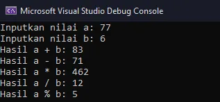
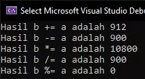

Kegunaan Operator C++
Operator Ini berguna untuk menghasilkan Hasil yang dimau
Contohnya Kalau kamu pergi membeli suatu barang maka harus menggunakan Uang,Uang itu nanti akan dihitung
berapa kamu memberi dan berapa Kembalian dari uang yang kamu beli barang tadi
Operator tidak hanya menghasilkan itu saja tetapi juga menghasil
Benar atau Tidak
Suatu Benda atau apapun yang ada dengan menggunakan boolean (bool)
1.Operator Aritmatika
Operator aritmatika merupakan operator yang digunakan untuk melakukan operasi aritmatika.
Lihat di bawah ini adalah table Operator Aritmatika:
| Nama Operator | Simbol Operator |
|---|---|
|
Penjumlahan Pengurangan Perkalian Pembagian Sisa Bagi |
+ - * / % |
contoh hasil campuran,kekurangan nya adalah pembagian yang menghasilkan koma tidak akan di tampilkan di kode pemograman tersebut:
#include <iostream>
using namespace std;
int main() {
int a, b;
cout << "Inputkan nilai a: ";
cin >> a;
cout << "Inputkan nilai b: ";
cin >> b;
cout << "Hasil a + b: " << a + b << endl;
cout << "Hasil a - b: " << a - b << endl;
cout << "Hasil a * b: " << a * b << endl;
cout << "Hasil a / b: " << a / b << endl;
cout << "Hasil a % b: " << a % b << endl;
return 0;
}
Hasilnya:
Perhatikan / ini adalah pembagian tapi 77 di bagi 6 hasilnya kok 12?
karena kita menggunakan int ,int adalah bilangan bulat jika ingin menghasilkan bilangan desimal gunakan
float
#include <iostream>
using namespace std;
int main() {
float a, b;
cout << "Inputkan nilai a: ";
cin >> a;
cout << "Inputkan nilai b: ";
cin >> b;
cout << "Hasil a / b: " << a / b << endl;
return 0;
}
2.Operator Penugasan
Operator penugasan (Assignment Operator) merupakan operator untuk meberikan tugas pada variabel. Biasanya untuk mengisi nilai.
Lihat di bawah ini operator penegasan:
| Nama Operator | Simbol Operator |
|---|---|
|
Pengisian Nilai Pengisian dan Penambahan Pengisian dan Pengurangan Pengisian dan Perkalian Pengisian dan Pembagian Pengisian dan Sisa bagi Pengisian dan shift left Pengisian dan shift right Pengisian dan bitwise AND Pengisian dan bitwise OR Pengisian dan bitwise XOR |
= += -= *= /= %= <<= >>= &= |= ^= |
Sekarang kita coba kode nya
#include <iostream>
using namespace std;
int main() {
int a, b;
// pengisian nilai dengan operator =
a = 12;
b = 900;
// pengisian sekaligus penambahan
b += a; // ini sama seperti b = b + a
cout << "Hasil b += a adalah " << b << endl;
// pengisian sekaligus pengurangan
b -= a; // ini sama seperti b = b - a
cout << "Hasil b -= a adalah " << b << endl;
// pengisian sekaligus perkalian
b *= a; // ini sama seperti b = b * a
cout << "Hasil b *= a adalah " << b << endl;
// pengisian sekaligus pembagian
b /= a; // ini sama seperti b = b / a
cout << "Hasil b /= a adalah " << b << endl;
// pengisian sekaligus penambahan
b %= a; // ini sama seperti b = b % a
cout << "Hasil b %= a adalah " << b << endl;
return 0;
}
Hasilnya

Pada program tersebut, variabel b kita isi ulang dengan operator penugasan.
Sebagai contoh, operasi:
b += a
Sama seperti operasi:
b = b + a
Artinya kita akan mengisi nilai untuk b dengan nilai b ditambah nilai a.
Begitu juga dengan opeartor yang lain.
b *= a; // -> b = b * a
Isi b dengan nilai dari perkalian b dengan a.
Jadi operator ini untuk mengisi nilai.
3.Operator Pembanding
Operator pembanding adalah operator untuk memabndingkan dua buah nilai.
Operator ini juga dikenal dengan operator relasi.
Bisa dilihat tebal di bawah ini:
| Nama Operator | Simbol Operator |
|---|---|
|
Lebih Besar Lebih Kecil Sama Dengan Tidak Sama dengan Lebih Besar Sama dengan Lebih Kecil Sama dengan |
> < == != >= <= |